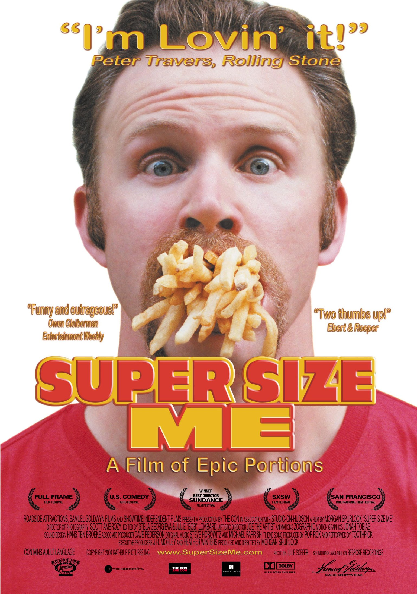

Documentales más vistos
SUPER SIZE ME



Super Size Me es una película documental estadounidense de 2004 dirigida y protagonizada por Morgan Spurlock, un cineasta independiente estadounidense. La película de Spurlock sigue un período de 30 días del 1 de febrero al 2 de marzo de 2003, durante el cual afirmó consumir sólo comida de McDonald's, aunque más tarde reveló que también bebía grandes cantidades de alcohol. La película documenta el cambio drástico en la salud y el bienestar físico y psicológico de Spurlock. También explora la influencia corporativa de la industria de la comida rápida, incluida la forma en que fomenta la mala nutrición para su propio beneficio y beneficio.